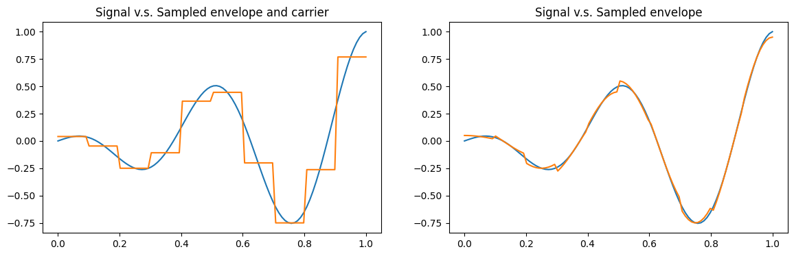
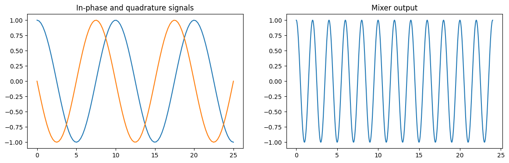

Signals (qiskit_dynamics.signals)¶
This module contains classes for representing the time-dependent coefficients in matrix differential equations.
These classes, referred to as signals, represent classes of real-valued functions, either of the form, or built from functions of the following form:
where
\(f\) is a complex-valued function called the envelope,
\(\nu \in \mathbb{R}\) is the carrier frequency, and
\(\phi \in \mathbb{R}\) is the phase.
Furthermore, this module contains transfer functions which transform one or more signal into other signals.
Signal API summary¶
All signal classes share a common API for evaluation and visualization:
The signal value at a given time
tis evaluated by treating thesignalas a callable:signal(t).The envelope \(f(t)\) is evaluated via:
signal.envelope(t).The complex value \(f(t)e^{i(2 \pi \nu t + \phi)}\) via:
signal.complex_value(t).The
signal.drawmethod provides a common visualization interface.
In addition to the above, all signal types allow for algebraic operations, which should be understood in terms of algebraic operations on functions. E.g. two signals can be added together via
signal_sum = signal1 + signal2
and satisfy
signal_sum(t) == signal1(t) + signal2(t)
Signal multiplication is defined similarly, and signals can be added or multiplied with constants as well.
The remainder of this document gives further detail about some special functionality of these classes, but the following table provides a list of the different signal classes, along with a high level description of their role.
Class name |
Description |
|---|---|
Envelope specified as a python |
|
Piecewise constant envelope, implemented with array-based operations, geared towards performance. |
|
A sum of |
|
A sum of |
Constant Signal¶
Signal supports specification of a constant signal:
const = Signal(2.)
This initializes the object to always return the constant 2., and allows constants to be treated
on the same footing as arbitrary Signal instances. A
Signal operating in constant-mode can be checked via the boolean
attribute const.is_constant.
Algebraic operations¶
Algebraic operations are supported by the SignalSum object. Any
two signal classes can be added together, producing a SignalSum.
Multiplication is also supported via SignalSum using the identity:
I.e. multiplication of two base signals produces a SignalSum with
two elements, whose envelopes, frequencies, and phases are as given by the above formula.
Multiplication of sums is handled via distribution of this formula over the sum.
In the special case that DiscreteSignals with compatible sample
structure (same number of samples, dt, and start time) are added together, a
DiscreteSignalSum is produced.
DiscreteSignalSum stores a sum of compatible
DiscreteSignals by joining the underlying arrays, so that the sum
can be evaluated using purely array-based operations. Multiplication of
DiscreteSignals with compatible sample structure is handled
similarly.
Sampling¶
Both DiscreteSignal and
DiscreteSignalSum feature constructors
(from_Signal() and
from_SignalSum() respectively) which build an
instance by sampling a Signal or
SignalSum. These constructors have the option to just sample the
envelope (and keep the carrier analog), or to also sample the carrier. Below is a visualization of a
signal superimposed with sampled versions, both in the case of sampling the carrier, and in the case
of sampling just the envelope (and keeping the carrier analog).

Transfer Functions¶
A transfer function is a mapping from one or more Signal to one or more Signal.
Transfer functions can, for example, be used to model the effect of the electronics finite
response. The code below shows the example of an IQMixer. Here, two signals modulated at
100 MHz and with a relative \(\pi/2\) phase shift are passed through an IQ-mixer with a
carrier frequency of 400 MHz to create a signal at 500 MHz. Note that the code below does not make
any assumptions about the time and frequency units which we interpret as ns and GHz, respectively.
import numpy as np
from qiskit_dynamics.signals import DiscreteSignal, Sampler, IQMixer
dt = 0.25
in_phase = DiscreteSignal(dt, [1.0]*200, carrier_freq=0.1, phase=0)
quadrature = DiscreteSignal(dt, [1.0]*200, carrier_freq=0.1, phase=np.pi/2)
sampler = Sampler(dt/25, 5000)
in_phase = sampler(in_phase)
quadrature = sampler(quadrature)
mixer = IQMixer(0.4)
rf = mixer(in_phase, quadrature)
fig, axs = plt.subplots(1, 2, figsize=(14, 4))
in_phase.draw(0, 25, 100, axis=axs[0])
quadrature.draw(0, 25, 100, axis=axs[0], title='In-phase and quadrature signals')
rf.draw(0, 24, 2000, axis=axs[1], title='Mixer output')

Signal Classes¶
|
General signal class. |
|
Piecewise constant signal implemented as an array of samples. |
|
Represents a sum of signals. |
|
Represents a sum of piecewise constant signals, all with the same time parameters: dt, number of samples, and start time. |
|
A list of signals with functionality for simultaneous evaluation. |
Transfer Function Classes¶
|
Applies a convolution as a sum |
|
Implements an IQ Mixer. |